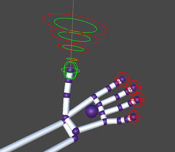
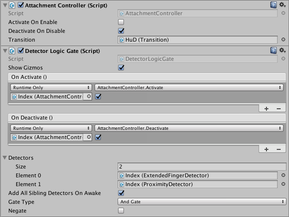

Detection Utilities¶
The detection utilities are a set of scripts in the core asset package that provide a convenient way to detect what a user’s hand is doing. For example, you can detect when the fingers of a hand are curled or extended, whether a finger or palm are pointing in a particular direction, or whether the hand or fingertip are close to one of a set of target objects. Detectors can be combined together using a Logic Gate. The Detector Logic Gate is itself a detector that logically combines two or more other detectors to determine its own state. Need a thumb’s up gesture? Combine a thumb extended detector with a thumb pointing upward detector using a logic gate.
Detectors dispatch standard Unity events when they activate or deactivate. This makes it easy to hook up objects and scripts to a detector straight from the Unity editor — without writing a line of code.
Each detector can draw gizmos that make it easy to see its configured conditions and whether it is currently active or inactive.
Detectors are designed to be small building blocks that you can put together into something interesting. This also has the benefit that it is easy to write your own detector scripts.
The Detector scripts, including the PinchDetector, are now part of the Core Assets package. The former Pinch Utility module has been retired and the example scenes moved to the Detection Examples package, which also contains an additional scene that illustrates how to use detectors.
Using a Detector¶
To use a detector, add it to a scene as a component of a game object. In general, it makes the most sense to put the script on an object related to its function, for example, to put a detector you are going to use to detect the state of a thumb on the thumb object itself. You can use the HandAttachments prefab from the Attachments module to separate the concerns of visual representation and physics interaction from game logic. The HandAttachments prefab exposes the most important transforms for the parts of the hand.
Once the detector is added to the scene, you can set its properties in the Unity Inspector. The properties vary by detector, but most include the following:
- Period – the Period detemines how often the detector checks the hand state.
- Hand Model – which hand the detector watches. If you put the detector on a hand model, then the detector will find the parent hand automatically. Otherwise, you can set the hand manually.
- On and Off values – the on value sets the point at which a detector turns on; the off value sets where it turns off again. Generally there should be a small difference between the on and off values to prevent the detector from bouncing between the on and off states when the tracking value is right at the threshold.
- Show Gizmos – sets whether the detector draws graphic debugging aids. Gizmos are still only shown when also enabled in the Unity Editor. Turning off individual detector gizmos can be helpful when you have multiple detectors on the same hand.
Standard Unity Events¶
When a detector turns on (activates) or turns off (deactivates), it dispatches standard Unity events. You can hook up these events in the Unity Inspector panel to pretty much anu Unity game object or its components, or to scripts that you write yourself. The primary Detector events are OnActivate and OnDeactivate. Some detectors dispatch additional events.
Combining Detectors¶
You can combine multiple detectors to create more complex behavior using the DetectorLogicGate script. A logic gate takes any number of other detectors as input and outputs a single boolean. It is a type of Detector object, so it also dispatches OnActivate and OnDeactivate events. You can set logic gates to be AND gates (all inputs must be true for the output to be true) or OR gates (the output is true if any input is true). You can also negate the output to configure the gate as a NAND or NOR gate.
Since a logic gate is, itself, a Detector, you can hook up multiple logic gates to create arbitrarily complex logic. However, if you have more than a couple of gates, you should consider whether it is more maintainable to just write a script that encompasses that logic. If you do connect multiple gates, uncheck the “Add All Sibling Detectors” option and drag the proper Detectors to the gate’s Detector list manually.
Using Detectors with Attachments¶
The HandAttachments prefab has a AttachmentController script that exposes two methods, Activate() and Deactivate() that you can hook directly to the event dispatchers of a detector. The AttachmentController script enables child game objects of the attachment controller when Activate() is called and disables them when Deactivate() is called. Thus, you can use detectors to turn objects attached to the hand on or off.
Detector Cookbook¶
The following collection of ideas illustrate how to use detectors to implement behaviors and interaction in your application.
Thumb’s Up¶
To detect a “Thumb’s Up” use an ExtendedFingerDetector to check that the thumb is the only extended finger and a FingerDirectionDetector to check detect when the thumb is pointing up. Combine these detectors with an AND-type logic gate:
- ExtendedFingerDetector – configure the component so that the Thumb must be extended and the other fingers must not be extended.
- FingerDirectionDetector – configure the component so that:
- Finger Name = TYPE_THUMB
- Pointing Direction = (0, 1, 0)
- Pointing Type = Relative To World
- On and Off angles: set as desired
- DetectorLogicGate – Set the Gate Type to And Gate and hook up the event dispatchers to the object or component that should react to the thumb’s up.
You can place these components together on the Thumb transform of a HandAttachment (or anywhere convenient on a HandModel really).
Camera-Facing Open Hand¶
To detect when a palm is facing the camera use an ExtendedFingerDetector to check that all the fingers are extended and a PalmDirectionDetector to check detect when the palm is facing the camera. Combine these detectors with an AND-type logic gate:
- ExtendedFingerDetector – configure the component so that all fingers must be extended.
- PalmDirectionDetector – configure the component so that:
- Pointing Direction = (0, 0, 1)
- Pointing Type = Relative To Horizon
- On and Off angles: set as desired
- DetectorLogicGate – Set the Gate Type to And Gate and hook up the event dispatchers to the object or component that should react to the thumb’s up.
You can place these components together on the Palm transform of a HandAttachment (or anywhere convenient on a HandModel really).
Pinch-To-Pickup¶
Picking up objects in Unity can be fairly complex and have many edge-cases that need to be taken into account. Things get especially complex when you want to pick up objects that also have rigidbodies that you want to otherwise collide with the hands. This challenge is the reason Leap Motion created the Interaction Engine. For the simplest cases, however, you can use detectors to determine when the hand should pickup or release an object and write Unity scripts to do the actual object movement or re-parenting.
The following example uses a ProximityDetector to select the object to pick up; a PinchDetector to trigger pick-up and release, and a simple custom script to attach and detach objects to the hand’s pick up point.
Add the following components to the PinchPoint game object of a HandAttachment:
ProximityDetector – add any objects eligible to be picked up to the Target Objects list. (You can also use tags or layers to identify potential targets.)
PinchDetector – The default settings work, but you can adjust the Activate and Deactivate Pinch Distance properties to adjust how far or close the thumb and index finger must be apart to pick up or release an object.
Add a new script component named “Pickup” using the following code:
using UnityEngine; using Leap.Unity; public class Pickup : MonoBehaviour { GameObject _target; public void setTarget(GameObject target) { if (_target == null) { _target = target; } } public void pickupTarget() { if (_target) { StartCoroutine(changeParent()); Rigidbody rb = _target.gameObject.GetComponent<Rigidbody>(); if(rb != null) { rb.isKinematic = true; } } } //Avoids object jumping when passing from hand to hand. IEnumerator changeParent() { yield return null; if(_target != null) _target.transform.parent = transform; } public void releaseTarget() { if (_target && _target.activeInHierarchy) { if (_target.transform.parent == transform) { //Only reset if we are still the parent Rigidbody rb = _target.gameObject.GetComponent<Rigidbody>(); if (rb != null) { rb.isKinematic = false; } _target.transform.parent = null; } _target = null; } } public void clearTarget(){ _target = null; } }
Finally, set the detector event dispatchers to call the Pickup script methods:
- PinchDetector.OnActivate() -> Pickup.pickupTarget()
- PinchDetector.OnDeactivate() -> Pickup.releaseTarget()
- ProximityDetector.OnDeactivate() -> Pickup.clearTarget()
- ProximityDetector.OnProximity(GameObject) -> Pickup.setTarget(GameObject)
This script is sufficient to pick up game objects with and without rigidbodies and pass them from hand-to-hand. To avoid collision problems, the script turns rigid bodies to kinematic when they are picked up and turns them to non-kinematic when they are released.
Making Your Own Detector¶
To create your own Detector classes, you must extend the Detector base class and implement logic that calls Activate() when your detector turns on and Deactivate() when it turns off. Most of the provided detector scripts use a coroutine that checks the watched state. You can do the computation in one of Unity’s Update() callbacks, but it may be less efficient to do so if you don’t need to check every Unity frame.
It is also a good idea to implement a gizmo drawing script when possible so that you can see how the detector is working while looking at your hands.
The following code is a bare-bones template for a Detector implementation. To complete this template, you would, at a minimum, add the logic to access the tracking data you are interested in and check whether it satisfies some criteria. You can use the existing Detector implementations for further examples.
using UnityEngine;
using UnityEngine.Events;
using Leap;
using Leap.Unity;
public class CustomDetector : Detector {
public float Period = .1f; //seconds
public float OnValue = 1.0f;
public float OffValue = 1.5f;
private float gizmoSize = .1f;
private IEnumerator watcherCoroutine;
void Awake(){
watcherCoroutine = watcher();
}
void OnEnable () {
StopCoroutine(watcherCoroutine);
StartCoroutine(watcherCoroutine);
}
void OnDisable () {
StopCoroutine(watcherCoroutine);
}
IEnumerator watcher(){
float watchedValue = 20;
while(true){
//Your logic to compute or check the current watchedValue goes here
if(watchedValue > OffValue){
Activate();
}
if(watchedValue < OnValue){
Deactivate();
}
yield return new WaitForSeconds(Period);
}
}
#if UNITY_EDITOR
void OnDrawGizmos(){
if(IsActive){
Gizmos.color = OnColor;
} else {
Gizmos.color = OffColor;
}
Gizmos.DrawWireSphere(transform.position, gizmoSize, OnValue);
Gizmos.color = LimitColor;
Gizmos.DrawWireSphere(transform.position, gizmoSize, OffValue);
}
#endif
}